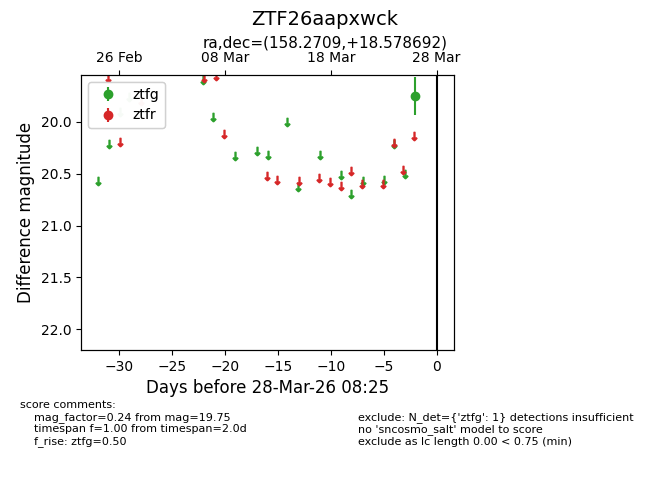
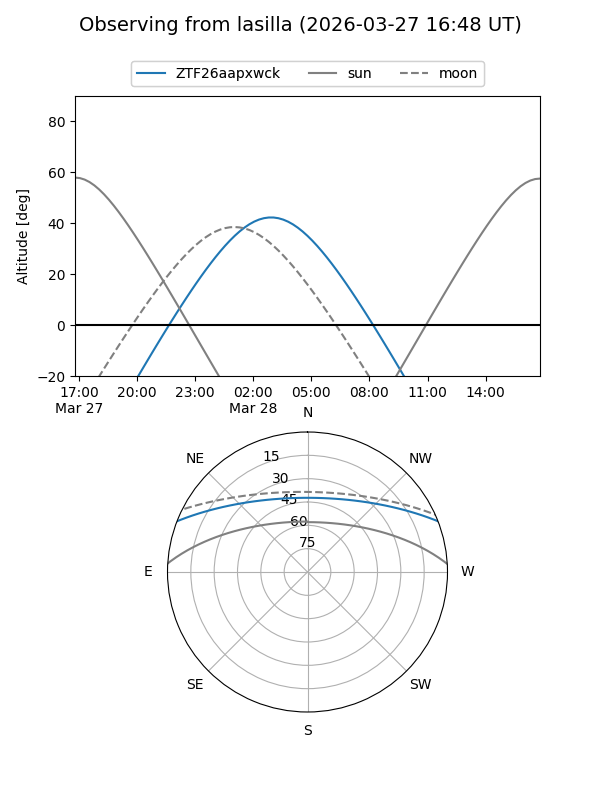
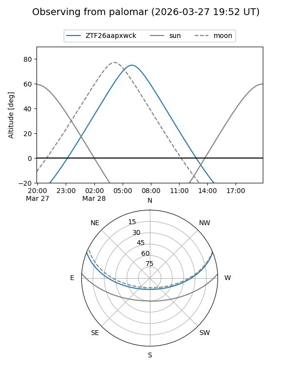

ZTF26aapxwck
Target ZTF26aapxwck at 2026-03-28 08:28
Aliases and brokers:
FINK: link
Lasair: link
ALeRCE: link
alt names
ZTF26aapxwck (ztf,fink_ztf)
Coordinates:
equatorial (ra, dec) = 158.2709,+18.57869
equatorial (HMS+DMS) = 10:33:05.01,+18:34:43.29
galactic (l, b) = (220.5813,+57.11683)
Flags:
Photometry:
last ztfg=19.75
1 ztfg detections
Lightcurve

Visibility


Additional plots